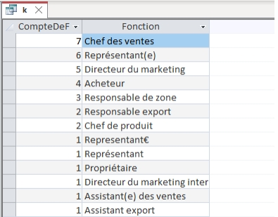
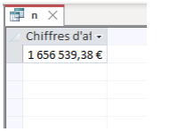
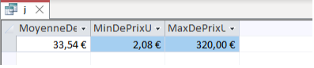
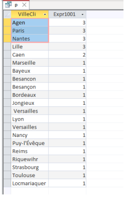
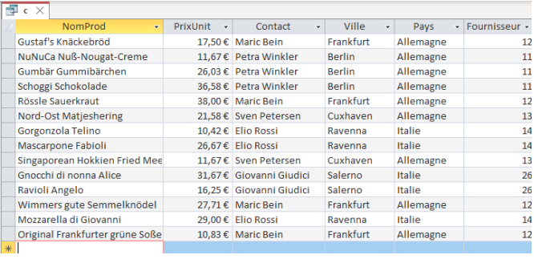

Mission 2
Cette mission a pour but d'analyser les données de l'entreprise afin d'acquerir une vision precise de leurs points forts et faible pour aider Kdou à recalibrer
-
1er Indicateur: la fonction de contact fournisseur la plus représentée.
On recherche dans la base de données quel fonction du contact des fournisseur est la plus présente et affilié avec Kdou. Ceci pourrait aider Kdou à avoir une image claire de leurs contacts forts et faible et agir en fonction de leurs besoins
La fonction de contact fournisseur la plus représentée est Chef des ventes : 7. Si on compte les erreurs sur représentant (représentant€, représentant(e) et Représentant), cela nous donne : 9 pour Représentant.Code SQL :

SELECT Count(Fournisseur.Fonction) AS CompteDeFonction, Fournisseur.Fonction
FROM Fournisseur
GROUP BY Fournisseur.Fonction
ORDER BY Count(Fournisseur.Fonction) DESC;
2éme Indicateur: Chiffre d'affaire total généré
Cette requête nous aide à calculer le chiffre d’affaires total généré avec les informations dont on dispose. Ceci est indispensable pour calculer les gains de l'entreprises.
Le chiffre d’affaires total est de 1 656 539,38€Code SQL :

SELECT Sum(CM.Port+DC.QteCom*DC.PrixUnitCli*(1-DC.Remise)) AS [Chiffres d'affaires]
FROM Commande AS CM INNER JOIN DetailCommande AS DC ON CM.NoCom = DC.NoCom;
3éme Indicateur: Prix moyen de vente des produits, le prix minimum et le prix maximum.
Grâce à cet indicateur nous pouvons calculer le prix moyen, le prix minimum et maximum de vente de produits. Ceci s'éprouve important car cela permet Kdou de se placer dans le marché et determiner leur type de publique à cibler
Dans le cas de Kdou.La moyenne est de 33,54 €, le minimum est de 2,0833 € et le maximum est de 320,00 €. Ceci a été calculé grâce à la requête suivante.Code SQL :

SELECT Avg(Produit.PrixUnit) AS MoyenneDePrixUnit,
Min(Produit.PrixUnit) AS MinDePrixUnit,
Max(Produit.PrixUnit) AS MaxDePrixUnit
FROM Produit;
4éme Indicateur : Les villes où la clientele est la plus importante.
Dans cette partie, nous avons étudié la clientèle de Kdou et avons déterminé les villes où ils sont le plus nombreux. Cet indicateur aiderait l'entreprise à lancer des offres spéciales de produits exotiques ou en demande dans les villes où la clientèle est la plus importante.
Dans la base de données de Kdou la clientèle est la plus importante à Agen, Paris et Nantes.Code SQL :

SELECT C.VilleCli, Count(C.CodeCli)
FROM Client AS C
GROUP BY C.VilleCli
ORDER BY Count(C.CodeCli) DESC;
5éme Indicateur: Les produits d'Italie ou d'Allemagne vendus 50€ ou moins
Grâce à cet indicateur nous pouvons voir quels produits sont vendus à 50€ ou moins ce qui sert à identifier les produits populaires à prix abordables et les comportements d'achat régionaux
Dans le cas de Kdou les produits sont nombreux!Code SQL :

SELECT Produit.NomProd, Produit.PrixUnit, Fournisseur.Contact, Fournisseur.Ville,
Fournisseur.Pays
WHERE (((Fournisseur.Pays)="Italie")) OR (((Fournisseur.Pays)="Allemagne") AND
((Produit.PrixUnit)<=50));